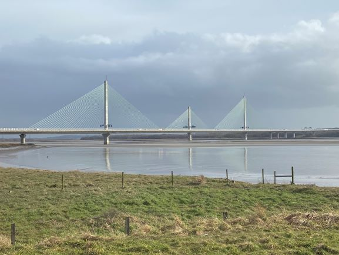
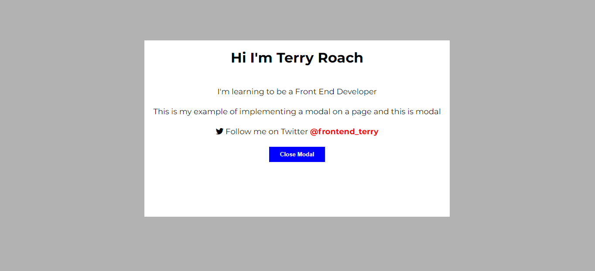
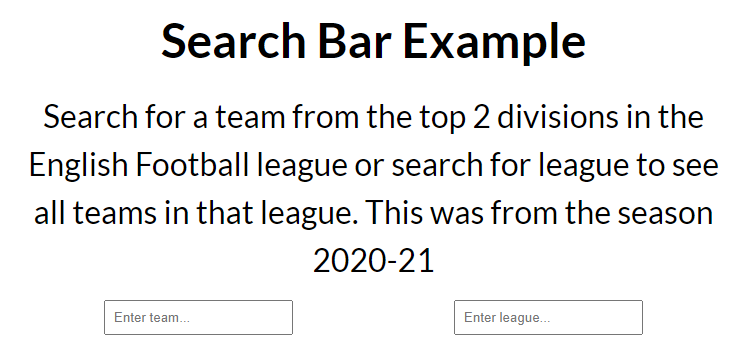

These blogs are created as I make my journey learning to be a front-end Developer and looking to get a position in the industry. I will do blog posts as I create new projects or learn new functionality. The most recent are below or choose from the links above.
Project
Image Carousel
Wesbite carousels, also know as 'sliders' are popular in website design. They allow multiple slides to be cycled through 1 at a time, either automatically, user controlled or both. The slides can contain images, CTAs or just about anything you choose.
14/03/2021
Read More Project
Using a Modal
A modal is a dialog box/pop up window that is displayed on top of the current page. The user must engage with the modal in order to close and return to the main content.
04/03/2021
Read More Project
Search Bar
A search bar allows a user to search for information on a web page. The user types in their desired search into the input field and the matcghing results are returned.
04/03/2021
Read More 